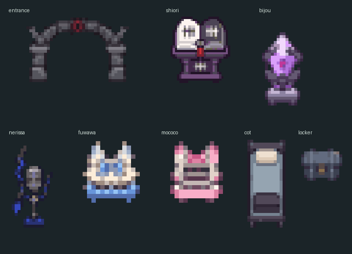

HOLOCRAWL · 고정지형 초안176
The Cell 리턴즈 · Advent
감방마다 철제 침상을 놓고, 보관함·벽걸이 사슬·작은 선반을 더했습니다. 시오리 소품은25% 줄이고 후와모코는50% 키워 크기를 맞췄습니다.
도트 준비 중…
벽에 붙인 배치 · 뒤쪽 던전 벽과 연결독립 배치 · 사방 최소2칸 통로
시오리 · 흑백 금서비쥬 · 봉인 보석네리사 · 깃털 마이크후와와 · 파란 경비실모코코 · 분홍 경비실
소품 도트 확대 보기

32px 타일 · 쇠창살의 통로는 열린 상태로 표시 · 그림을 누르면2배 정수 배율로 확대됩니다. 브라우저 도트·배치 검토본이며 전투와 보상은 후속 작업입니다.
공식 Advent / The Cell 설정 · 수정 전 감옥175 · 배치 검사